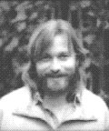

I recently started learning MacApp. (I know, I know, I can see you shaking your great
shaggy collective head, chuckling to yourself, asking where I was three years ago when
MacApp was still news. Let's just say I'm a late bloomer.) People weren't kidding when
they said that the learning curve is long and steep. They also weren't kidding when they
said that it's absolutely worth it.
For me, it was a double whammy: learning MacApp and transitioning from THINK C to
MPW. (See, if I'd only learned it in the MacApp 2.0 days I could have used THINK
Pascal, but noooo, I had to wait till now.) I've been using THINK C for virtually all my
programming since 1986 or so. Using MPW for my own little exploratory projects
would be like calling in a highly trained, ultramodern, rapid- deployment mobile
emergency medical team to remove a splinter from my thumb. The job would get done,
and beautifully, but it'd be an absolutely colossal waste of time, effort, and expense.
Frankly, I'd rather just have a good pair of tweezers.
But alas, if I want to use MacApp (and I do!) the days of coding on my PowerBook 100
in the backyard with loyal hounds lolling at my feet are gone for good. Now I need 16
MB of RAM minimum and atleast40 MB of hard disk space (120 to be really
comfortable). And I'm not even going to mentionMacApp compile times; it hurts me too
much.
But all that's really just logistics and can be gotten used to pretty quickly. The real
difference is in the very nature of my interaction with the machine: It used to be that
when I'd think of something that needed doing, I'd just go do it. It was like building a
machine from scratch, piece by handcrafted piece. Now, using MacApp, when I think of
something that needs doing I conduct massive, cross- referenced searches through
megabytes of source code to figure out where it's already been done, because no doubt
somebody already thought of it, or something very much like it, and implemented it
better than I ever could. It's as though I'm running around on top of a giant, humming
machine that stretches to the horizon on all sides, hunting for just the right place to
reach down into the dark recesses, pull up a live, vibrating cable, and splice in my
little special-purpose unit. Often I've spent an hour hunting around for the right place
to insert some code, only to discover that to do what I want I just need to set the value
of some out-of-the-way Boolean deep inside an object's remote ancestor.
Well, I could ramble forever about my learning experiences, but those of you who've
been there know all about it, and those of you who haven't probably don't want to hear
it. But this is the first time since I discovered the Macintosh and switched from FORTH
to C that thefeelof programming has been completely transformed for me. It occurred
to me that the fact that programming is the kind of thing that canhave a feeling to it is
noteworthy. Programming computers is an activity unlike any other. It's a
human-machine interaction, but because the machine is very special, interacting with
it is also very special. Programming has a depth that other machine interactions don't,
so it can assume qualities not normally associated with the operation of machinery. It
can be a creative act, akin to building an intricate, glittering crystal clockwork out of
gossamer strands of pure thought; and it can also be formidable drudgery, a mountain
of mind-numbing details, endless in their intricacy, interrelatedness, and total
irrelevance to the real task at hand. These are not normally the kinds of things you'd
say about operating your dishwasher or toilet.
Computers are something truly new on earth. They're machines that can simulate any
other machine; they're somehow potentiallyeverymachine in one. A well-known
computer luminary put it this way:
It [the computer] is a medium that can dynamically simulate the details of any other
medium, including media that cannot exist physically. It is not a tool, although it can
act like many tools. It is the first metamedium, and as such it has degrees of freedom
for representation and expression never before encountered and as yet barely
investigated. -- Alan Kay, "Computer Software,"Scientific American, September
1984.
Other machines are physical extensions of ourselves; they let us sense and manipulate
our physical world with more power and flexibility than we can by ourselves. But
they're justphysicalextensions. Computers, though, manipulate and embody
abstractions and symbols; they operate on patterns of electrical activity, on
imagination, on mindstuff. If you can imagine a machine or a medium in detail, you can
program a computer to simulate it. So programming computers is much, much more
than telling them what to do -- it's telling them what to be.
Of course, all this philosophical and poetic mumbo-jumbo crashes to the ground when
faced with reality. Try telling my friend Michele -- who wrote an entire book on her
Macintosh SE and just recently realized that she can use Standard File dialogs to
navigate her hard disk -- that her computer "has degrees of freedom for
representation and expression never before encountered." Yeah, right. Admittedly, the
computer is much more fluid-seeming to programmers than to users (someday,
hopefully, a moot distinction), but there's still a large discrepancy between the
promise and the realization. Computers still feel more like erector sets -- lots of
hard, inflexible little parts -- than like clay.
Boiled down to its thick, syrupy essentials, computer programming is quite simply the
creation and communication of detailed instructions. The creation is the really exciting
part, and is (or should be) the main task. But the communication is what really
defines the experience of programming; it's the part that has afeelto it.
All this touchy-feely talk smacks of natural language. Are programming languages
really just another class of natural languages? Is that why programming can feel so
rich? I found a great book that addressed this very question (among others):The
Cognitive Connectionby Howard Levine and Howard Rheingold.
Programming languages and natural languages do indeed have deep similarities, and
share essential features found in any language. They're both sets of abstract symbols
that have meaning only by mutual agreement between communicating parties. They're
both open-ended: they have an underlying structure and system of rules that allow an
infinite variety of correct sentences to be constructed. (Even more remarkably, any
correct sentence can later be deciphered by anyone who knows the language, even
though they've never seen that sentence before.)
Linguists say that a language has three parts: phonology, syntax, and semantics.
Phonology is the way a language is turned into sounds, and is irrelevant to
programming languages since they're never spoken. Syntax is the set of rules that
specify how the parts of the language -- words and phrases -- are put together to
form sentences. Programming languages obviously have strict and unforgivingsyntax.
But syntax by itself is an empty shell, telling us only whether a sentence is well
formed, not what it means. That's the function of semantics.
Ah, sweet semantics! This is where the rubber meets the road, linguistically speaking,
and where significant differences between natural languages and programming
languages begin to appear. Howard and Howard illustrate one big semantic difference
between natural languages and programming languages by comparing their
dictionaries. (Dictionaries are, in a sense, the embodiment of a language's semantics.)
Natural language dictionaries are written in natural languages, so the language must be
rich and flexible enough to describe itself. When you look up an English word in
Webster's, you get a definition written in English. This is only possible because words
in natural languages can have more than one meaning.
Programming language dictionaries, on the other hand, are never written in a
programming language. When you look up the definition of a Pascal word, the
description is written in English (or Portuguese or Swahili or whatever), not Pascal
or C++ or LISP. Unfortunately, the duplicity of meaning that allows a natural language
to describe itself opens the door to paradox and self- contradiction, something
programming languages can't tolerate.
But there's another, even more apparent semantic difference between programming
languages and natural languages. As the Howards so aptly put it:
. . . although philosophers and linguists have struggled for centuries to give precise
meaning to the word "meaning," you don't need a degree in either discipline to realize
that what constitutes meaning for a programming language is dramatically different
from what constitutes meaning for a natural language.
Semantically, programming languages are only a sort of horribly stunted subset of
natural languages, because the world they describe -- the operations of computers --
is only a sort of horribly stunted subset of the natural world. So "conversations" in a
programming language aren't conversations at all; they're one-sided and
one-dimensional commands whose conversational interest is on a par with the
instructions on the back of a shampoo bottle: Lather, rinse, repeat.
We are, of course, in the infancy of our relationship with computers, still drooling
and babbling experimentally most of the time. Look at MacApp: compared to other
available methods of programming the Macintosh, it's astoundingly elegant and
streamlined, but even MacApp's most vocal devotees don't want to stop there. Far from
being the end product of the evolution of programming, MacApp is only one of the first
teetering steps toward more natural and more fluent communication with computers.
A big question is whether our interactions with computers willever be totally fluent,
where fluency means the complete subsumption of syntax, so that we can go directly
from meaning to expression with no conscious effort. Some people insist it will
happen, that there's a future of instant, effortless communication with computers, a
wide and crystal clear pathway between us and them, but somehow I can't buy it. I
suspect that instead, computer communication will just get more and more like
natural communication.
Fraught with misunderstanding and misinterpretation, blocked by its implicit
awkwardnesses and incompleteness, human language is nevertheless rich beyond depth.
Its infinite flexibility allows it to carry and contain the full spectrum of human
thought and feeling, and provides a ground for endless creativity. Indeed, there is an
intense joy to using language --anylanguage -- well. If we get only half as far with
our computers as we have with our words, we'll have come a very long way indeed.
DAVE JOHNSON recently bought some Crash Dummies and peripheral equipment.
These are little "action figures," modeled after real crash dummies, that fly apart in
various ways upon impact. You can buy a car to crash them in, crash dummy pets
(named Bumper and Hubcat), crash dummy babies in strollers or car seats, crash
dummy pedestrians, and even a crash dummy torture chair with straps and clamps and
cranks to pull the dummies apart more slowly, one limb at a time. Dave is convinced
that if he preserves all the parts in their original packaging he can sell them for some
huge amount of money in the future, or at least that's how he's justifying the expense.
*
Dave welcomes feedback on his musings. He can be reached at JOHNSON.DK on
AppleLink, dkj@apple.com on the Internet, or 75300,715 on CompuServe.*